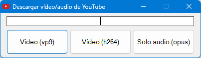

Todo lo relacionado con la tecnología y la informática.
Videojuegos de todo tipo, últimamente más de relax y/o narrativos, aunque pruebo diferentes géneros.
La música (me viene de familia, mi padre es guitarrista flamenco), escucho de todo. También entraría lo que es el mundillo del audio profesional y sus aparatos.
Series, manga y anime.
Español.
Nativo.
Inglés.
Nivel alto de lectura y escritura. Nivel medio-alto hablado.
Japonés.
Nivel inicial de lectura y escritura. Nivel bajo hablado.
Tengo un servidor de Minecraft vanilla en la dirección ultrak.ddns.net. Si quieres entrar, contáctame indicando tu nombre en el juego para añadirte a la lista blanca. Además, dispone de una interfaz web para visualizar un mapa 3D del terreno, a la cual se puede acceder aquí.
También, he creado con AutoHotkey una pequeña aplicación que permite descargar vídeos de YouTube, introduciendo su URL, para obtener un archivo del vídeo en formato .mp4 (con códec vp9 o h264), o en formato de audio .opus. Si quieres descargarla, haz clic aquí.
